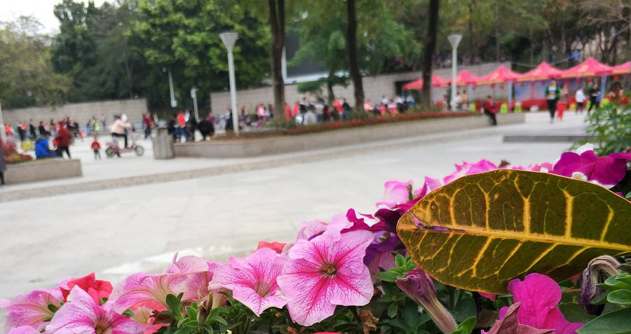
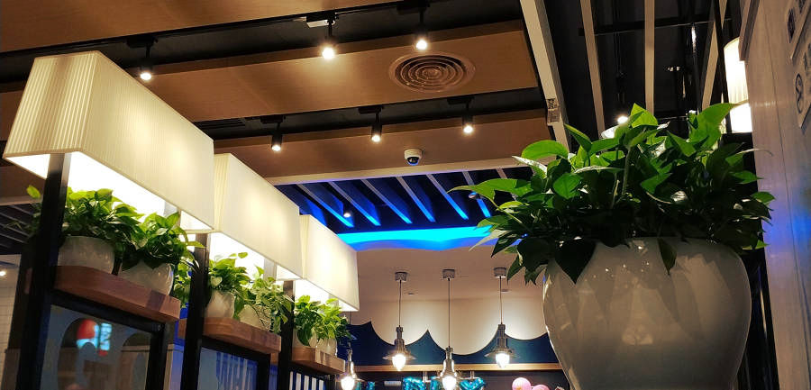
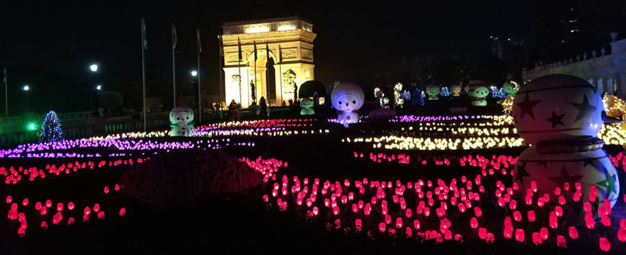

最重要的节日，最热闹的节日。最普通的人，最平常的方式。看看传统之外的过年，这里有不一样的春节。
HHappy new year 2018
年三十，到处都挂起了节日的灯笼。有人回了老家，有人去了旅行，而附近的广场上依然可以看到不少年轻人，其中一部分是社区自愿者（常参与或举办公益活动）。这几天天气都很好，志愿者们办起了拔河活动，吸引了附近的人来玩，制造热闹的气氛。

广场拔河
下午五六点，估计很多人的老家已经开始了年夜饭，不过这里很多人的年夜饭可能只是快餐，像肯德基、必胜客那样的餐厅在春节也营业。下图那家餐厅装修不错，很难想象这样的餐厅会接待乞丐，可这却是真的。我曾经有 2 次看到他们接待乞丐（乞丐吃东西付钱），而且还对乞丐提供额外的帮助。节假日常有年轻人来这吃东西，过年也不例外，也有人在这里吃东西聊天。

会接待乞丐的餐厅
晚上是个特别的时间，而对于晚上去哪里浪，他们也早已有了计划。来到世界之窗，人不比往常少，其他公园估计也差不多，也许这就是浪的方案之一。园内的节目会持续到跨年的时刻，饿了的话还可以买东西吃，有汉堡也有泡面。不过这些都不重要，关键是他们过了一个自己的新年。

公园
天空都被点亮了